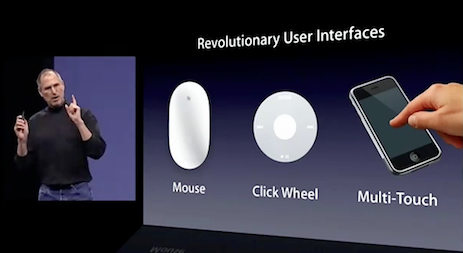
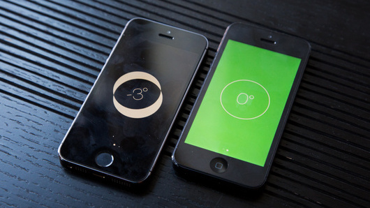
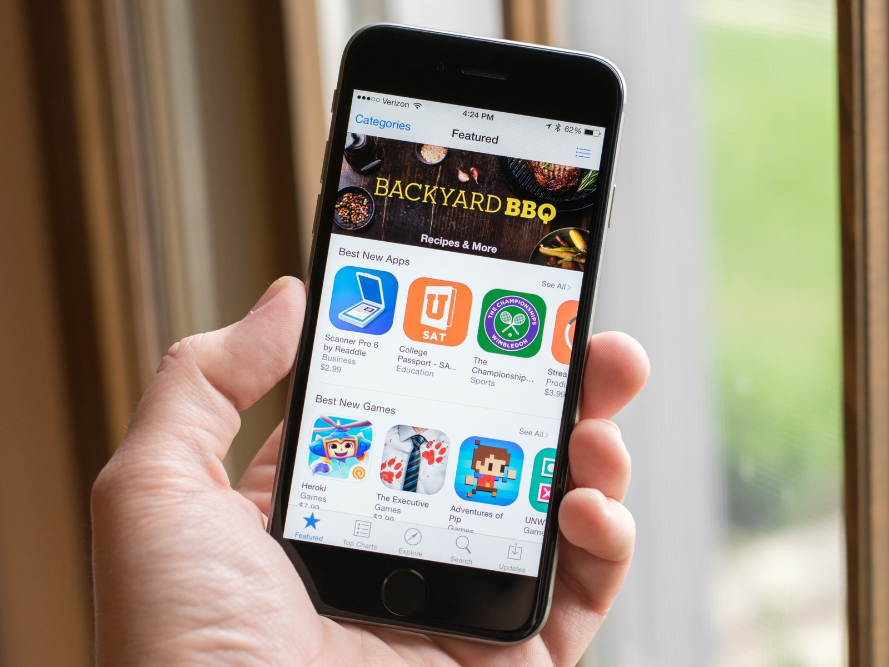
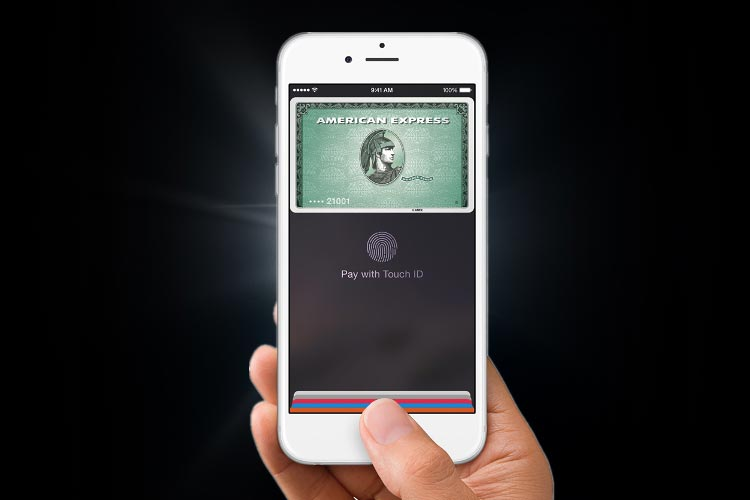
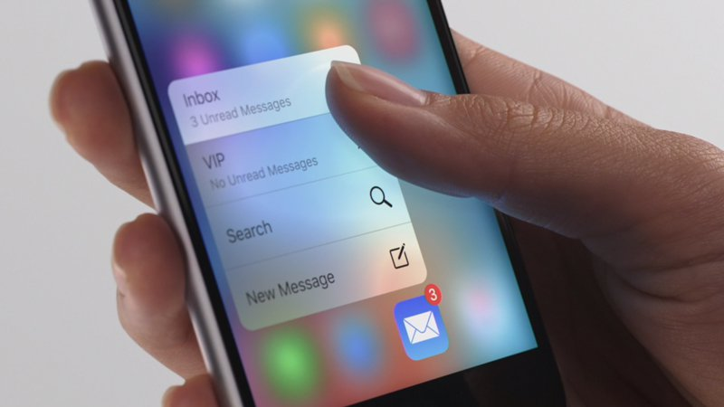
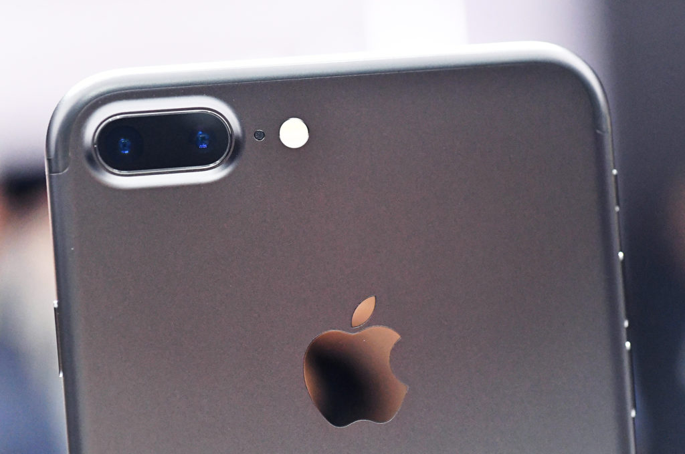

Favourite Thing: Apple iPhone
The first iPhone was launched on 9 January 2007, so this post marks the 10th anniversary of the Apple iPhone!
The thing I like most about Apple products is the ecosystem. Apple has the best tech ecosystem compared to other products. Phones, laptops, watches, and TV work together, all integrated with operating systems made for each gadget. These gadgets are also complemented with Apple's cloud services and work very interconnected. Notifications and files can transfer seamlessly through each product, macs can make phone calls, watches can receive notifications, every gadget can easily mirror to the TV, users can share files through AirDrop, not to mention the Apple Pay which is unfortunately still not supported in most banks in Australia.
The iPhone itself has come a long way, from iPhone 2G in 2007, followed by 3G, 3GS, 4, 4S, 5, 5S, 6, 6S, SE, and 7. I can't wait for the next release of iPhone marking the tenth anniversary, which is rumoured to be a major overhaul of the current design.
Here are the ways the iPhone has changed smartphones:
Multi-touch Screen
Motion and orientation sensors
App Store
Apple Pay
3D Touch
Wide-angle and telephoto cameras
